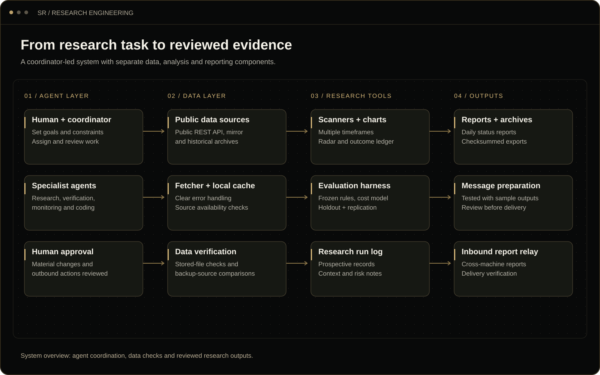

Case studies / 03
Case study 03 · Independent project
Multi-Agent Research & Automation System
A coordinated system of AI agents that collects information, investigates ideas, checks findings and prepares reports. I designed the workflow around specialist roles, repeatable testing and human review, so research can move forward with a clear record of how each conclusion was reached.
Turning research into a repeatable workflow
Research involves gathering information, exploring possibilities, comparing results and deciding what deserves attention. I built a system that assigns those steps to focused agents while keeping the work organized and reviewable.
The project was developed around public market-data analysis and simulation. Its core work is data collection, coordinated research, verification, charts and reporting.
My role
I designed the agent roles and handoffs, directed AI-assisted Python development, reviewed integrations, and investigated data and testing issues.
How the system fits together
A coordinator breaks the research task into focused pieces. Data tools gather the inputs, specialist agents analyze them, and verification checks support the final report.

- Collect: gather public data and organize it for analysis.
- Investigate: run scans, build charts and compare candidate ideas.
- Review: check calculations and return findings with supporting records.
Delegation, verification and human review
![Delegation flow: a human operator gives goals and constraints to a coordinator agent. The coordinator sends a study spec to a research agent and the same spec to an independent second research lane, watch tasks to monitoring agents, and build tasks to local coding agents on separate machines, which report over authenticated HTTPS to an inbound relay receiver. All of these feed a verification agent, which returns pass or fail with evidence to the coordinator. Changes, freezes and anything outbound go back to the human operator.](../assets/workflows/research-delegation.svg)
| Step | Who handles it | What happens |
|---|---|---|
| Set the direction | Human operator and coordinator | Define the question, inputs and criteria for a useful result. |
| Investigate | Research and coding agents | Collect information, implement analysis and return focused findings. |
| Cross-check | Verification agent or independent research lane | Compare calculations and data before accepting a conclusion. |
| Review changes | Human operator | Approve material changes and decide the next step. |
What I built and tested
| Component | What it does |
|---|---|
| Agent coordination | Assigns focused research, coding, monitoring and verification tasks, with clear handoffs. |
| Data collection and backup sources | Fetches public information, keeps local copies and checks source availability. |
| Scanning and charting tools | Examines data across timeframes and prepares charts for review. |
| Repeatable evaluation | Tests ideas against predefined criteria and checks calculations against reference results. |
| Research records and reports | Tracks observations, changes and outcomes so the reasoning can be followed. |
| Cross-machine reporting | Receives reports from coding agents working on separate machines. |
Testing the ideas before trusting them
The system checks that calculations are repeatable before evaluating whether an idea meets the research criteria.
- Set the criteria first. Define what a useful result would look like before running the study.
- Check the calculations. Reproduce known reference results to confirm the method behaves as expected.
- Test on fresh data. Compare ideas beyond the data used to develop them.
- Keep a clear record. Document changes and rerun checks as the work develops.
In the market-data simulation, the evaluation reproduced 103 reference results for one candidate and 22 for another. It also screened out two ideas that did not meet the preset criteria. That made the output useful for deciding which ideas deserved further work.
Keeping research moving when a data source failed
During one study, the main data provider became unavailable from the research environment. Repeated retries were delaying the workflow.
- Found the cause: identified that the provider was blocking access from that environment.
- Used the official backup: switched to another source provided by the same vendor.
- Verified the result: compared the backup data with the reference records and reran the calculation checks.
The research continued using the verified backup. The change was recorded so the study remained consistent and traceable.